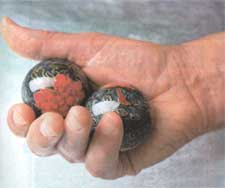

Natural Health
Alternative medicine and natural remedies for fighting carpal tunnel syndrome, including what causes it, green pharmacy solutions, willow, chamomile, pineapple, red pepper, turmeric, comfrey, cumin.
By James A. Duke, Ph.D.
February/March 2003
By James A. Duke, Ph.D.
A friend of mine works long hours on her computer, often for days at a time, and has developed carpal tunnel syndrome. This malady is caused by compression of the nerve that passes through the "tunnel" formed by the wrist bones. Symptoms are pain, weakness, finger stiffness and a pins-and-needles sensation.
Carpal tunnel syndrome (CTS) is a repetitive motion injury - cumulative trauma associated with constant, rapid use of the fingers (low intensity, high frequency forger work). It's an occupational hazard of bookkeeping and checkout clerks who punch buttons all day long. But CTS didn't become a household word until the 1980s, when personal computers came to dominate our workplaces. Suddenly millions of jobs required the steady, rapid-finger movements that can cause repetitive motion injuries like CTS. It also is a problem for musicians, factory workers and other people who must constantly use their hands.
As my friend's CTS went from bad to worse, she had to give up her massage practice and stop playing her musical instrument because she lost sensation in her fingers. Finally, her CTS got so bad she couldn't turn the doorknob to her home.
That's when she decided to get aggressive in her natural healing program. She consulted an osteopath who manipulated her wrists and encouraged her to exercise, use more herbs and manage her stress. She received regular massages with relaxing aromatherapy oils, took an herbal nervepain formula and slathered liberal amounts of herbal oils - especially anti-arthritic St. John's wort, which my readers also have praised - on her wrists throughout the day.
Her recovery was slow, but she did recover - without the surgery frequently performed for CTS.
REPETITIVE MOVEMENTS HIT HOME
I use a computer as much as or more than my friend - sometimes 14 hours a day. So why haven't I developed CTS?
A couple of possibilities spring to mind. One is that I exercise to interrupt long hours spent at the keyboard. The other is my routine consumption of foods that inhibit cyclo-oxygenase-2 (COX-2), an enzyme involved in inflammation.
Being a man also is a factor in my avoiding this painful syndrome. Women develop carpal tunnel problems more often than men do because of the cyclical hormone fluctuations of the menstrual cycle, pregnancy and menopause, which can contribute to swelling of the tissues surrounding the carpal tunnel. But I also think my hand exercises have something to do with it. Adopting a Chinese technique that improves flexibility, I hold two steel balls in one hand and roll them around when I am not typing. The rolling motion massages the tiny muscles and ligaments of the hands and wrists. I also jump on my stationary bike every, other hour and do a seven-minute spin with light dumbbells in each hand, which stretches and exercises most of the muscles in my arms, wrists and fingers.
GREEN PHARMACY FOR CARPAL TUNNEL SYNDROME
Quite a few herbs can help alleviate CTS. When I first wrote The Green Pharmacy I was unaware of the potential of COX-2 inhibitors in easing inflammatory ailments. Now I suspect the anti-inflammatory COX-2-inhibiting compound apigenin, which is in the celery I take for gout, may be sparing me carpal tunnel syndrome. Apigenin is just one of several anti-inflammatories in celery. (See Page 120 for my COX-2-inhibiting recipe .) If I had CTS, I'd also try these herbs:
Willow (Salix, various species). Willow bark, the original source of aspirin, contains chemicals (salicylates) that relieve pain and reduce inflammation. You might try other herbs rich in salicylates, notably meadowsweet and wintergreen. Remember, if you shouldn't take aspirin, you probably shouldn't take aspirinlike herbs either.
Chamomile (Matricaria recutita). Chamomile tea is best known as a tasty way to calm jangled nerves. But its active compounds (bisabolol, chamazulene and cyclic ethers) have potent anti-inflammatory action, too. Chamomile also is a great source of apigenin. If I had CTS, I'd drink several cups of chamomile tea a day.
Pineapple (Ananas comosus). Pineapple contains a protein-dissolving (proteolytic) enzyme, bromelain, often recommended for CTS.
"Bromelain has well-documented effects on virtually all inflammatory conditions, regardless of cause," according to naturopaths Joseph Pizzorno, N.D., and Michael Murray, N.D., co-authors of A Textbook of Natural Medicine. "Bromelain can reduce swelling, inflammation and pain. Bromelain is very safe to use. In human studies, large doses (nearly 2 grams) have been given without side effects."
Naturopaths suggest taking 250 to 1,500 milligrams of pure bromelain a day, between meals, to treat inflammatory conditions such as CTS. Bromelain is available at many health food stores. Since I favor food sources, I prefer to get my bromelain from pineapple itself. Ginger and papaya also contain helpful proteolytic enzymes. You might enjoy a fruit salad of pineapple and papaya spiced with grated ginger and turmeric, two spices loaded with COX-2-inhibiting, anti-inflammatory compounds.
Red pepper (Capsicum, various species). Also known as cayenne, red pepper contains six pain-relieving compounds and seven that are anti-inflammatory. Especially noteworthy is capsaicin. Commercial salves containing capsaicin, such as Zostrix and Capzasin-P, are widely used to treat pain.
You might add several teaspoons of powdered cayenne to a quarter-cup of skin lotion and rub it on your wrists. You can make a capsaicin lotion by steeping five to 10 red peppers in 2 pints of rubbing alcohol for a few days. Wash your hands thoroughly in milk - water won't do the trick - after using any topical capsaicin treatment, as your don't want to get it in your eyes or on other sensitive parts. This powerful powder can cause irritation, so test it on a small area of skin before using it on a larger area. If you react to it, discontinue use.
I'd also add a few drops of lavender oil to the red-pepper salve. Lavender oil is a mainstay of aromatherapy, useful for treating inflammation and burns. Its aroma is quite relaxing, which helps when you're feeling the pain of carpal tunnel syndrome.
Turmeric (Curcuma longa). This flavorful spice contains curcumin, a potent anti-inflammatory chemical. Some studies suggest that curcumin is about half as effective as the pharmaceutical anti-inflammatory medication cortisone. Cortisone, though, is expensive and can have nasty side effects. Turmeric is much easier on the system and the pocketbook, and is a lot tastier.
Try using turmeric liberally on food, then taking some more in capsules available in health food stores. Add ground black pepper to food with the turmeric because compounds in black pepper increase the availability of the anti-inflammatory curcumin.
Comfrey (Symphytum officinale). In their excellent Encyclopedia of Common Natural Ingredients, pharmacognosist (natural product pharmacist) Albert Leung and Arkansas herbalist Steven Foster explain that applying comfrey to the skin can help relieve pain, swelling and inflammation. This has been confirmed through laboratory studies as well. The active compounds are allantoin and rosmarinic acid.
Comfrey has gotten some bad press recently because it contains some compounds that may cause liver damage when the herb is ingested. But there's no evidence that comfrey is risky when applied to the skin, which is what I would suggest for CTS (and arthritis). At home, I'd steam the fresh leaves and apply after cooling to the afflicted wrist. Those not lucky enough to have their own green pharmacy garden might add a few teaspoons of dried, powdered comfrey to the previously mentioned recipe for red pepper or to any skin cream.
Cumin (Cuminum cyminum). Cumin, a common spice used liberally in Mexican foods, contains three pain-relieving compounds, seven anti-inflammatory ones and four that combat swelling. If I had CTS, I'd use lots of cumin on food and add it to my curried rice, curried celery or CelebrADE (see recipe Page 120).
One of the world's leading authorities on herbal healing, James Duke is author of The Green Pharmacy (see MOTHER'S Bookshelf, Page 129). Active in rain forest preservation, he leads ecotours in the Amazon. Contact jimduke@cpcug.org .
 Ancient technique for a modern malady: Chinese steel balls massage muscles and tendons in the hand as they're rolled in the palm. |
 |
|